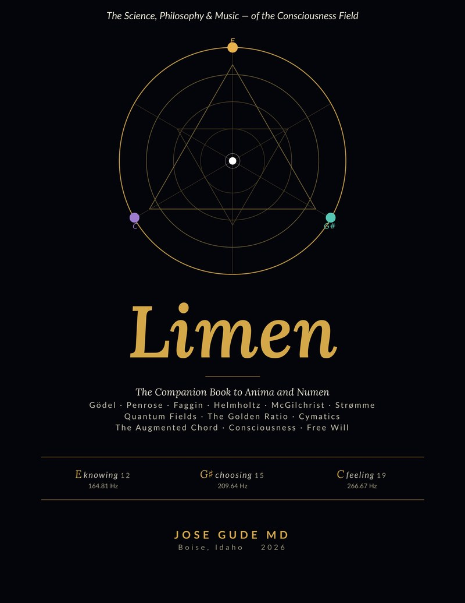

Limen
the threshold
A bio-cybernetic field manual at the threshold between substrate and signal. The companion volume to the trilogy — diagrams, references, and the architecture beneath the fiction.
8.5 × 11 in · Illustrated edition · Hardcover available
Synopsis
Limen is the third volume of the trilogy that began with Anima and continued in Numen — but it is not a novel. It is the field guide. The architecture beneath the fiction.
Where Anima dramatized the suspicion that consciousness is received, and Numen told the story of how a culture might come to honor that arrival, Limen sets out the actual research, diagrams, references, and trinity-structured maps that hold both novels together. Phi-coherence in EEG. The fractal architecture of the Webb signal. The three-frequency chord and its mathematical ground. The bio-cybernetic literature that has been building, quietly, for forty years. The contemplative traditions — Spanish mystics, Buddhist Trikāya, the Vedic three-bodied self — whose maps the novels recognize without naming.
Limen is for readers who finished Numen and wanted to look behind the curtain. It is also for clinicians, scientists, philosophers, and contemplatives who have arrived independently at the same threshold and want to see who else is standing there.
Inside
The Trinities
A central section mapping the three-fold structure that recurs across the novels — Knowing, Choosing, Feeling — onto the contemplative and scientific traditions that have used the same architecture under different names.
Bio-Cybernetic References
The actual bibliography. Forty years of phi-coherence research, neurofeedback work, cymatics, frequency medicine, and the philosophical literature on consciousness-as-reception. With one-sentence annotations on why each entry mattered to the novels.
The Webb Fractal
The exact geometry of the triangle: 34.38° · 55.62° · 90°. Its derivation. Its appearance on every cover of the trilogy.